Pretrain65 scaled D — frozen benchmark witnesses
Curated full episodes at simulation speed. These are demonstrations, not a success-rate estimate. Clean, recovered, late, and failed flights are labeled using the ordered-reference benchmark rule. Original geometry is preserved.
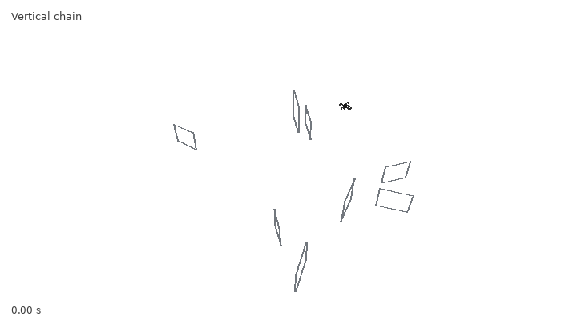
v622_hard_v2b_vertical_chain_008_06 · clean · 7.77 s · seed 2034338766 · misses 0 · MP4 · trajectory JSON 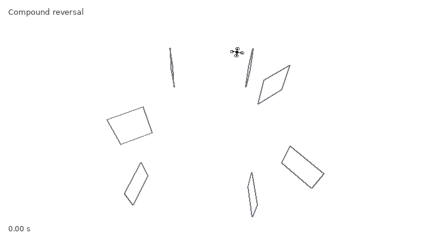
v622_hard_v2b_compound_reversal_021_03 · clean · 6.18 s · seed 2034526247 · misses 0 · MP4 · trajectory JSON 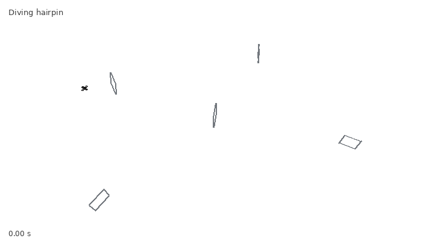
v622_hard_diving_hairpin_039_011_arena1 · clean · 5.99 s · seed 2034871016 · misses 0 · MP4 · trajectory JSON 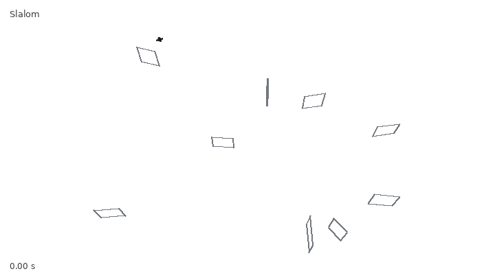
v622_hard_slalom_028_029 · clean · 7.43 s · seed 2034170759 · misses 0 · MP4 · trajectory JSON 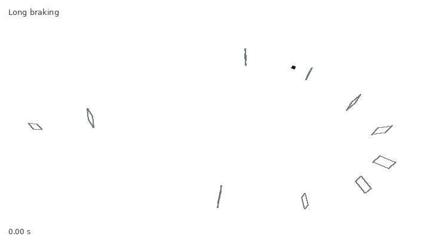
v622_hard_long_braking_023_005_arena1_mirror1 · clean · 9.45 s · seed 2034263107 · misses 0 · MP4 · trajectory JSON 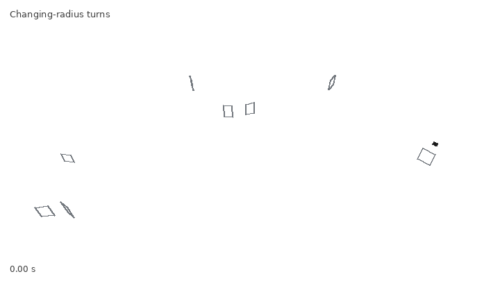
v622_hard_v2b_radius_switch_029_21 · clean · 10.50 s · seed 2034122368 · misses 0 · MP4 · trajectory JSON 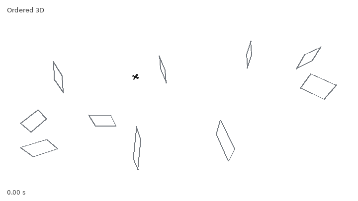
v622_hard_ordered_3d_042_003_mirror1 · clean · 6.85 s · seed 2034657592 · misses 0 · MP4 · trajectory JSON 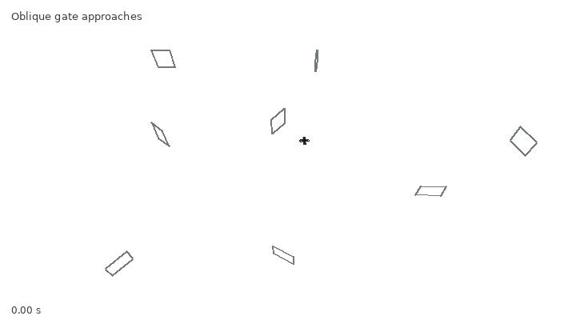
v622_hard_v2b_wrong_side_incidence_015_15 · clean · 13.17 s · seed 2034267774 · misses 0 · MP4 · trajectory JSON v622_hard_flow_027_057_mirror1 · clean · 7.09 s · seed 2034493585 · misses 0 · MP4 · trajectory JSON 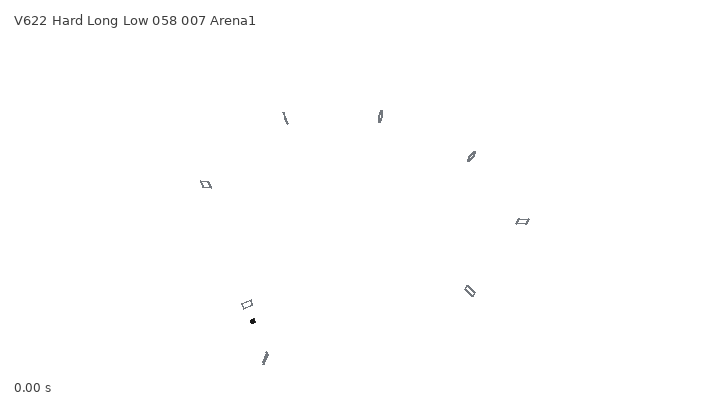
v622_hard_long_low_058_007_arena1_mirror1 · clean · 10.46 s · seed 2034565744 · misses 0 · MP4 · trajectory JSON 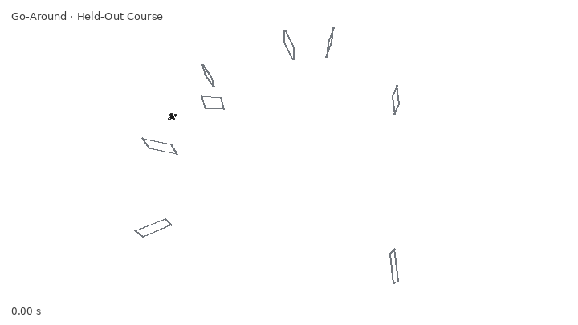
v622_hard_go_around_017_040_mirror1 · clean · 6.28 s · seed 2035025934 · misses 0 · MP4 · trajectory JSON 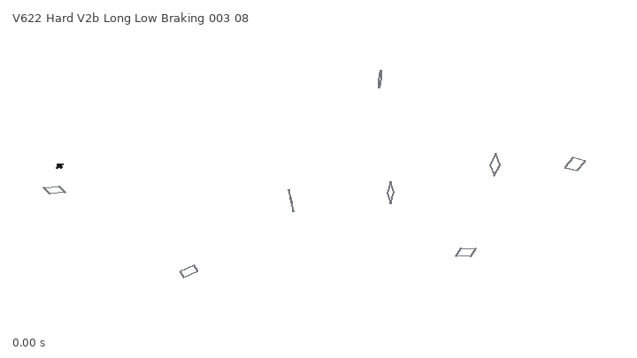
v622_hard_v2b_long_low_braking_003_08 · clean · 12.52 s · seed 2034131399 · misses 0 · MP4 · trajectory JSON 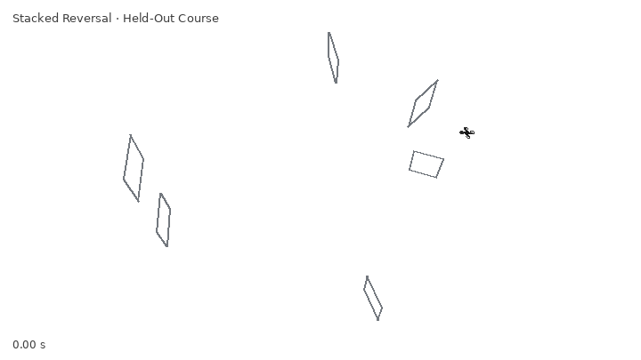
v622_hard_stacked_reversal_016_033 · clean · 4.76 s · seed 2034891838 · misses 0 · MP4 · trajectory JSON 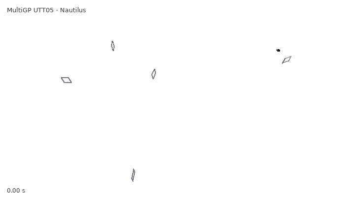
multigp_utt05_nautilus · clean · 7.28 s · seed 2034175070 · misses 0 · MP4 · trajectory JSON 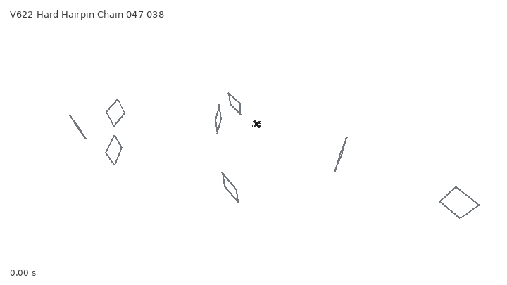
v622_hard_hairpin_chain_047_038_mirror1 · clean · 6.22 s · seed 2034851597 · misses 0 · MP4 · trajectory JSON 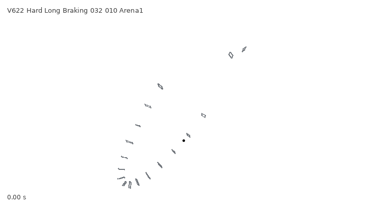
v622_hard_long_braking_032_010_arena1_mirror1 · clean · 12.81 s · seed 2034510004 · misses 0 · MP4 · trajectory JSON 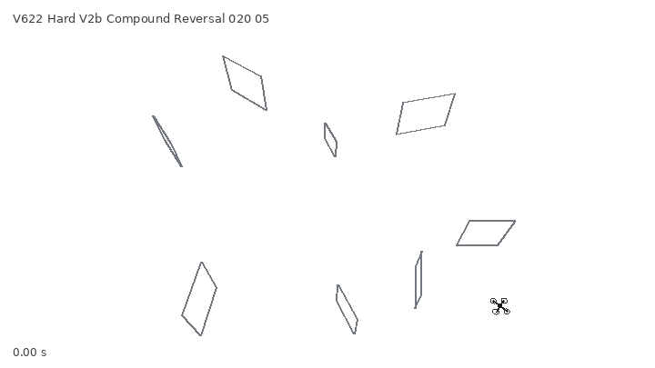
v622_hard_v2b_compound_reversal_020_05 · clean · 7.60 s · seed 2034274955 · misses 0 · MP4 · trajectory JSON 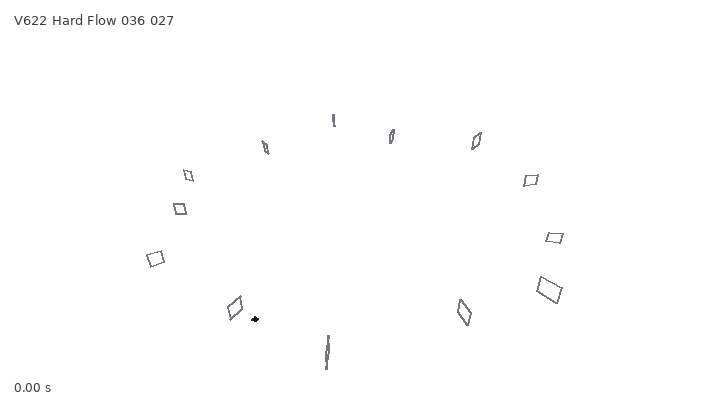
v622_hard_flow_036_027 · clean · 11.32 s · seed 2034514749 · misses 0 · MP4 · trajectory JSON 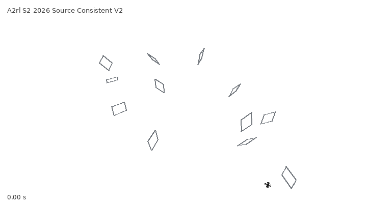
a2rl_s2_2026_source_consistent_v2_arena1 · recovery · 14.54 s · seed 2034229307 · misses 1 · MP4 · trajectory JSON 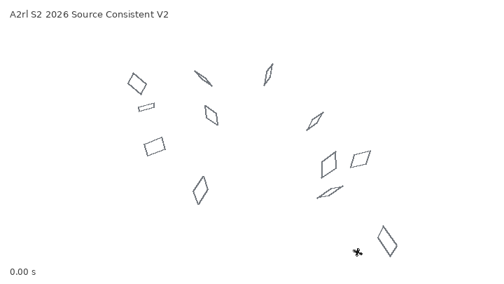
a2rl_s2_2026_source_consistent_v2_arena1 · failure · 9.86 s · seed 2034229296 · misses 1 · MP4 · trajectory JSON 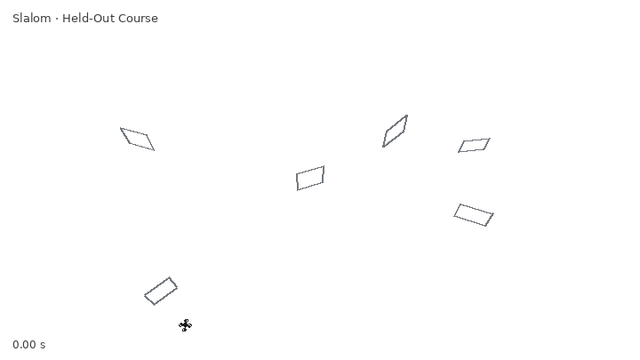
v622_hard_slalom_055_040_arena1 · late_recovery · 38.65 s · seed 2035006365 · misses 1 · MP4 · trajectory JSON v622_hard_go_around_017_040_mirror1 · recovery · 8.55 s · seed 2035025938 · misses 1 · MP4 · trajectory JSON